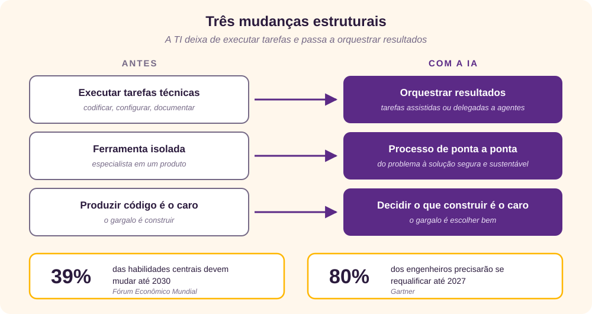
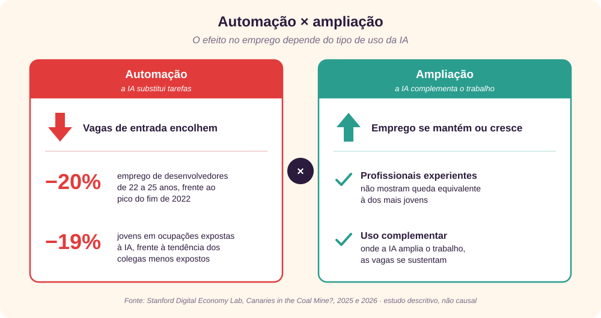
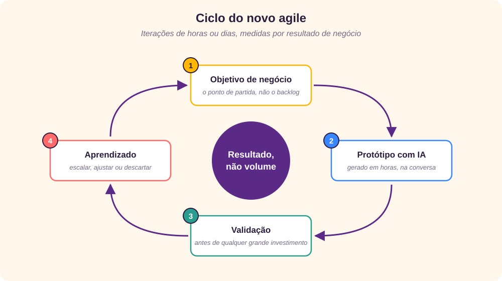
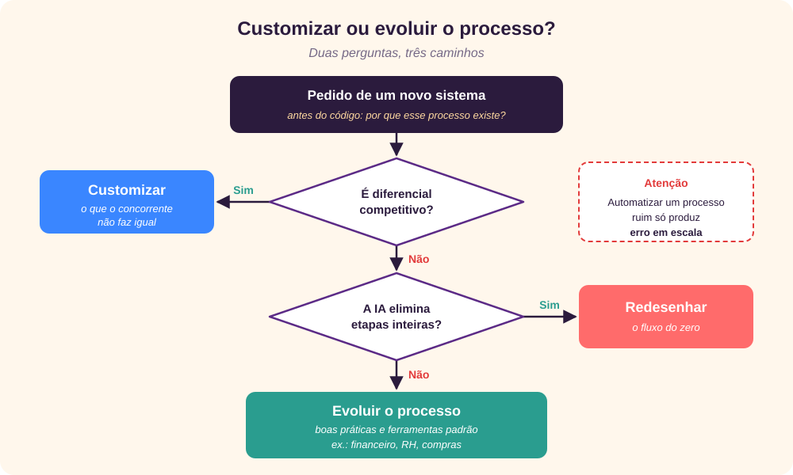

O fim de uma moeda
Durante duas décadas, o certificado foi a moeda de confiança da TI. Com a IA generativa respondendo em segundos o que antes exigia semanas de estudo, essa moeda começou a perder valor.
Nesta entrevista, Giovani Perotto Mesquita explica por que acredita que o modelo de negócio baseado em memorização está com os dias contados, o que muda para a TI e seus profissionais, e quais dados ainda relativizam essa tese.
O título fala em “morte” da indústria de certificados. Não é exagero?
É uma tese direta, mas não é sobre o fim do conhecimento. É sobre o fim de uma forma específica de provar conhecimento, baseada em memorização e em provas de múltipla escolha. O certificado dizia ao recrutador que alguém dominava o manual do fornecedor e tinha passado numa prova. Hoje, qualquer pessoa obtém em segundos a sintaxe de um comando, o passo a passo de uma configuração ou a resposta de um simulado. Saber de cor deixou de ser diferencial.
Por que a IA atinge justamente o certificado?
Porque o que a prova mede é exatamente o que a máquina faz melhor. Pesquisadores de Stanford destacam a proficiência da IA em trabalho baseado em conhecimento codificado, aquele registrado em manuais, livros e procedimentos escritos. [1] O manual do fornecedor é conhecimento codificado por definição.
![Dois painéis. À esquerda, o que a prova mede e a IA já entrega sozinha: sintaxe de comandos, passo a passo de configuração, respostas de simulado, conteúdo decorado do manual e múltipla escolha padronizada. Uma seta indica que o valor migra para a direita, para o que o mercado valoriza: formulação de problemas, julgamento técnico, pensamento sistêmico, domínio do negócio e prova de execução. Abaixo, barras comparam o prêmio salarial médio no 1º trimestre de 2026: 9,3% para habilidades não certificadas e 6,5% para certificações.](rc_images/CertificadosProvaMercado.svg)
E o mercado já está reagindo?
Já, com nuances. Segundo a Foote Partners, os prêmios salariais caíram pelo terceiro ano seguido, tanto para certificações quanto para habilidades não certificadas, e estas continuam pagando, em média, cerca de 3 pontos percentuais do salário base a mais. [3] [4] Em cibersegurança, as empresas também estão investindo menos: só 73% se dizem dispostas a pagar certificações dos funcionários, contra 89% em 2023. [5]
- Vantagem das não certificadas
- Cerca de 3 pontos do salário base
- Dispostas a pagar (cibersegurança)
- 73% em 2025, contra 89% em 2023
- Prêmio médio, 1º tri 2026
- 9,3% não certificadas × 6,5% certificações
O futuro da TI
Se o certificado perde valor, o que acontece com a própria área de TI?
A TI deixa de ser a área que executa tarefas técnicas e passa a ser a área que orquestra resultados. Codificar, configurar e documentar viram atividades cada vez mais assistidas ou delegadas a agentes de IA.
De que escala de mudança estamos falando?
Grande. Empregadores ouvidos pelo Fórum Econômico Mundial esperam que 39% das habilidades centrais mudem até 2030. [11] O Gartner projeta que a IA generativa vai criar novos papéis em engenharia e operações, exigindo a requalificação de 80% dos engenheiros até 2027. [6]

Na prática, o que muda no dia a dia?
O trabalho central passa a ser definir o problema, revisar o que a IA produziu e garantir que a solução é segura e sustentável. O foco sai da ferramenta isolada e vai para o processo de ponta a ponta. E há uma inversão importante: como produzir código ficou barato, decidir o que vale a pena construir ficou caro.
Toda TI sobrevive a essa transição?
Não. A TI que sobrevive é a que fala a língua do negócio. A TI que se limita a “abrir chamado e entregar” tende a ser absorvida por plataformas e agentes.
O futuro do profissional
Como muda a forma de avaliar um profissional de TI?
Ele passa a ser avaliado pelo que entrega, não pelo que sabe recitar. A pergunta de entrevista muda de “você tem a certificação X?” para “mostre um problema real que você resolveu e como resolveu”.
Já existem sinais concretos disso no emprego?
Sim, e eles atingem principalmente quem está começando. Pesquisadores de Stanford analisaram dados de folha de pagamento da ADP nos Estados Unidos. Na versão de 2025 do estudo, o emprego de desenvolvedores de 22 a 25 anos já tinha caído quase 20% em relação ao pico do fim de 2022. Na revisão de 2026, o emprego de jovens em ocupações expostas à IA está 19% abaixo de onde estaria se tivesse acompanhado o dos colegas menos expostos, enquanto os experientes não mostram diferença equivalente. [1]

Então a IA elimina vagas?
Depende do tipo de uso, e esse é o ponto decisivo. Onde a IA substitui tarefas, as vagas de entrada encolhem. Onde ela complementa o trabalho, o emprego se mantém ou cresce, sobretudo para quem tem experiência.
E o salário acompanha essa tendência?
No valor, sim, mas a vantagem vem diminuindo. No 1º trimestre de 2026, habilidades não certificadas rendiam prêmio médio de 9,3% do salário base, contra 6,5% das certificações. [4] Em IA a diferença é ainda maior: 14,5% para habilidades não certificadas contra 8,3% para certificações. Só que, em IA, são as certificações que mais crescem: quase 12% em um ano, enquanto as habilidades não certificadas caíram 1%. [9]
Quais competências ganham peso, então?
Eu destacaria cinco:
- Pensamento sistêmico: entender como tecnologia, pessoas e processo se conectam.
- Formulação de problemas: saber pedir bem, seja a um colega, a um cliente ou a um agente de IA.
- Julgamento técnico: identificar quando a resposta da IA está errada, insegura ou inadequada.
- Domínio do negócio: conhecer o setor em que atua tanto quanto a stack.
- Prova de execução: portfólio, repositórios públicos e resultados mensuráveis no lugar de selos. Um especialista ouvido pela Dice resume: um bom repositório no GitHub convence muito mais que um item no currículo. [3]
Por que o julgamento técnico merece destaque?
Porque a sensação de produtividade engana. Num experimento controlado com 16 desenvolvedores experientes de projetos open source, as tarefas feitas com IA levaram 19% mais tempo, mas eles acreditavam ter sido 20% mais rápidos. [7] Os autores alertam que é um retrato do início de 2025, num contexto específico. Saber avaliar o que a ferramenta entrega vale mais do que usá-la muito.
O certificado desaparece de vez?
Não completamente. Ele sobrevive onde há exigência regulatória ou contratual, como segurança e infraestrutura crítica. Mas deixa de ser porta de entrada e vira, no máximo, um complemento.
O novo agile
O que é o “novo agile”?
O agile nasceu para encurtar o ciclo entre ideia e entrega. A IA encurta esse ciclo ainda mais, a ponto de tornar parte dos rituais tradicionais lenta demais. E há uma ironia: o agile também virou uma indústria de certificados. Muitas empresas trocaram agilidade real por cerimônias, papéis e frameworks aplicados de forma burocrática. O novo agile resgata o espírito do manifesto original: pessoas, software funcionando e resposta à mudança.
Como funciona esse ciclo?
Ele parte de um objetivo de negócio, não de um item de backlog. Como o protótipo sai em horas, a validação acontece antes de qualquer grande investimento.

O que muda em relação ao agile tradicional?
Quase tudo o que é operacional:
| Aspecto | Agile tradicional | Novo agile |
|---|---|---|
| Ciclo de entrega | Sprints de 2 a 4 semanas | Iterações de horas ou dias |
| Protótipo | Caro, entra no backlog | Barato, gerado na própria conversa |
| Composição do time | Papéis fixos e especializados | Times menores, com humanos e agentes de IA |
| Métrica de sucesso | Velocidade e pontos | Resultado de negócio e aprendizado validado |
| Documentação | Escrita manualmente, muitas vezes desatualizada | Gerada e mantida continuamente com apoio da IA |
Mais velocidade não traz mais risco?
Traz, se não houver critério. O estudo do METR mostrou que a sensação de rapidez com IA pode enganar até profissionais experientes. [7] Por isso o novo agile mede resultado, não volume de entregas.
E o papel do líder?
Muda também: menos facilitação de cerimônias e mais definição clara de objetivos, limites e critérios de qualidade, para humanos e máquinas.
Customizar ou evoluir o processo
Se customizar ficou barato, isso não é uma boa notícia?
É uma armadilha. Quando cada área pode pedir um sistema sob medida e recebê-lo em dias, a tentação é automatizar o processo como ele está, inclusive seus defeitos. Automatizar um processo ruim só produz erro em escala. O dilema central da TI deixa de ser “comprar ou construir” e passa a ser “adaptar a ferramenta ao processo ou evoluir o processo”.
Como decidir?
Duas perguntas bastam.

Customize apenas o que é diferencial competitivo, algo que o concorrente não faz igual. Se a IA elimina etapas inteiras, redesenhe o fluxo do zero. Nos demais casos, como financeiro, RH e compras, evolua o processo com boas práticas e ferramentas padrão.
Qual é o papel do profissional nesse momento?
Fazer a pergunta incômoda antes de escrever uma linha de código: “por que esse processo existe?”. Customizar sem essa pergunta gera uma nova geração de dívida técnica, agora produzida em velocidade de IA.
Os próximos anos
Como você enxerga a transição até 2030?
Não será instantânea, mas o sentido é claro. O Fórum Econômico Mundial estima que 170 milhões de postos serão criados e 92 milhões deslocados até 2030, um saldo de 78 milhões. [11] Trata-se de transformação, não de extinção do trabalho. A título de projeção, vejo três fases.
![Linha do tempo com três fases projetadas. Adoção, de 2026 a 2027: agentes de IA no dia a dia de desenvolvimento, suporte e operações, e seleção por desafios práticos com IA liberada. Reorganização, de 2028 a 2029: times menores e mais multidisciplinares, e provas de múltipla escolha substituídas por laboratórios e simulações. Fusão com o negócio, de 2030 em diante: menos distância entre quem pede e quem constrói, e credenciais que viram portfólios verificáveis. Abaixo, a estimativa do Fórum Econômico Mundial até 2030: 170 milhões de postos criados, 92 milhões deslocados, saldo de 78 milhões.](rc_images/CertificadosRoadmap.svg)
Quais são essas fases?
A primeira é a adoção, em 2026 e 2027: agentes de IA viram parte do dia a dia de desenvolvimento, suporte e operações, e as empresas passam a avaliar candidatos por desafios práticos, com uso de IA liberado.
A segunda é a reorganização, em 2028 e 2029: times de TI ficam menores e mais multidisciplinares, e a avaliação troca a múltipla escolha por laboratórios e simulações, movimento que já começa na preparação para as provas. [3]
A terceira é a fusão com o negócio, de 2030 em diante: a distância entre “quem pede” e “quem constrói” diminui, e credenciais passam a ser portfólios verificáveis e históricos de entrega. O Gartner projeta que, no longo prazo, as organizações precisarão de ainda mais engenheiros qualificados para atender à demanda por software com IA. [6]
E no Brasil?
O movimento deve ter ritmo próprio. Setores regulados e o setor público tendem a manter exigências formais de certificação por mais tempo; startups e empresas de tecnologia devem abandonar esse critério mais cedo.
Os contrapontos
O que poderia enfraquecer a sua tese?
Um argumento forte precisa reconhecer os dados que o relativizam, e há alguns:
- O certificado voltou a valorizar. No 1º trimestre de 2026, os prêmios por certificação subiram 1,8%, a maior alta trimestral em dez anos, puxados por infraestrutura, segurança e arquitetura. No mesmo período, os das habilidades não certificadas caíram 2,2%, a maior queda desde 2002. [4] [10] O selo resiste, sobretudo onde há exigência técnica ou regulatória.
- Gestores ainda preferem certificados. Na pesquisa da Fortinet, 89% dos gestores de TI disseram preferir contratar profissionais de cibersegurança certificados. [5]
- Empresas de tecnologia ainda contratam credenciados. Elas raramente exigem credenciais nas vagas, mas são as que mais contratam profissionais com credenciais. [2]
- Correlação não é causa. Os próprios autores do estudo de Stanford alertam que os resultados são descritivos, não causais. Eles testam explicações alternativas, como juros, escolaridade e trabalho remoto, e o efeito diminui quando se controla a escolaridade. [1]
- A produtividade com IA ainda é difícil de medir. O METR mudou o desenho do estudo em 2026 porque muitos desenvolvedores já recusam trabalhar sem IA. [8]
Para fechar
Que conselho você daria a quem trabalha com TI hoje?
Investir menos em colecionar selos e mais em construir um histórico de entregas que fale por si. O que substitui o certificado é mais exigente: capacidade de resolver problemas reais, de questionar processos e de usar a IA com critério.
↑ Voltar ao topoA IA não decreta o fim da TI. Decreta o fim da TI que só executa, e abre espaço para uma TI que pensa, decide e transforma.
Referências
- Brynjolfsson, E.; Chandar, B.; Chen, R., “Canaries in the Coal Mine? Six Facts about the Recent Employment Effects of Artificial Intelligence”, Stanford Digital Economy Lab, revisão de agosto de 2026, digitaleconomy.stanford.edu (PDF de 2026; PDF de 2025).
- Burning Glass Institute e OneTen, “Credential Fluency: The Hiring Advantage in the Race for Skills”, resumo por Brian Heger, março de 2026, brianheger.com.
- Dice, “Pay for IT Skills, Certifications on the Decline”, outubro de 2025, dice.com.
- Foote Partners, “IT Skills and Certifications Pay Index”, 2º trimestre de 2026, abril de 2026, PDF.
- Fortinet, “Cybersecurity Skills Gap Report 2025”, fortinet.com.
- Gartner, “Generative AI will Require 80% of Engineering Workforce to Upskill Through 2027”, outubro de 2024, gartner.com.
- METR, “Measuring the Impact of Early-2025 AI on Experienced Open-Source Developer Productivity”, julho de 2025, metr.org.
- METR, “We are Changing our Developer Productivity Experiment Design”, fevereiro de 2026, metr.org.
- Network World, “AI certifications outpace non-certified AI skills in pay growth”, outubro de 2025, networkworld.com.
- Network World, “IT certification pay surges as noncertified skills slump”, abril de 2026, networkworld.com.
- World Economic Forum, “Future of Jobs Report 2025”, janeiro de 2025, weforum.org.


![Timeline with three projected phases. Adoption, 2026 to 2027: AI agents in the daily work of development, support and operations, and hiring through practical challenges with AI allowed. Reorganization, 2028 to 2029: smaller, more multidisciplinary IT teams, and multiple-choice exams replaced by labs and simulations. Merging with the business, 2030 onward: less distance between those who ask and those who build, and credentials that become verifiable portfolios. Below, the World Economic Forum estimate to 2030: 170 million jobs created, 92 million displaced, a net gain of 78 million.](rc_images/CertificadosRoadmap-en.svg)
![Due pannelli. A sinistra, ciò che l’esame misura e che l’IA fornisce già da sola: sintassi dei comandi, configurazione passo per passo, risposte ai test di prova, contenuti del manuale a memoria e scelta multipla standardizzata. Una freccia indica che il valore migra verso destra, verso ciò che il mercato premia: formulazione dei problemi, giudizio tecnico, pensiero sistemico, conoscenza del business e prova di esecuzione. Sotto, due barre confrontano il premio retributivo medio nel 1º trimestre 2026: 9,3% per le competenze non certificate e 6,5% per le certificazioni.](rc_images/CertificadosProvaMercado-it.svg)

![Linea del tempo con tre fasi proiettate. Adozione, dal 2026 al 2027: agenti di IA nel lavoro quotidiano di sviluppo, supporto e operazioni, e selezione con prove pratiche e uso dell’IA consentito. Riorganizzazione, dal 2028 al 2029: team IT più piccoli e multidisciplinari, ed esami a scelta multipla sostituiti da laboratori e simulazioni. Fusione con il business, dal 2030 in poi: meno distanza tra chi chiede e chi costruisce, e credenziali che diventano portfolio verificabili. Sotto, la stima del World Economic Forum fino al 2030: 170 milioni di posti creati, 92 milioni spostati, un saldo di 78 milioni.](rc_images/CertificadosRoadmap-it.svg)